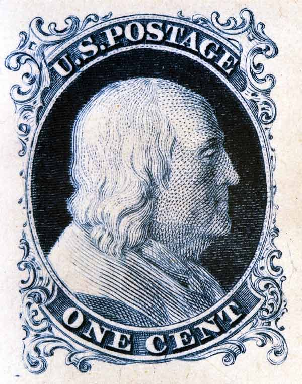
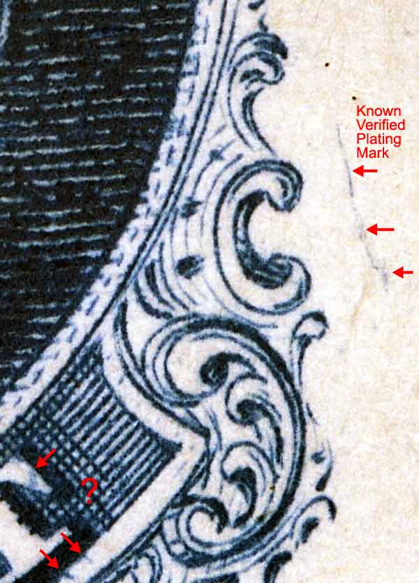
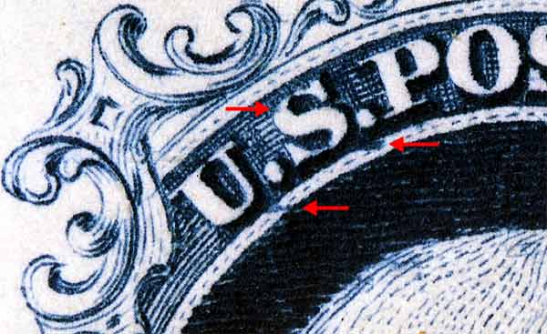

Government Reprint Issue of 1875, (Scott #40) Position 30 |
| Scott #40 Type I Perforated 12 Very White, Hard Crisp Paper. No Gum |
| This Archive. The images shown in the 1875 reprint archive are of a full sheet from the 1875 plate printed on India paper. The India paper proof is hinged to a light piece of cardboard in several places. This sheet of 100 stamps had no plate number or imprint on either side. The individual stamp designs are spaced much further apart than the original issues of 1851-1861 to facilitate perforations not cutting into the design. |
|  |
| Figure 1. (Below) The crack to the right of Ornament O/P is consistant. The marks below the "T" and "N" of "CENT" are not shown in any plating diagrams and may not be constant. There is also a slash below "C" of "CENT" which can be seen above.  |
| Figure 2. (Below) Marks below the "U" and "S" of "U.S." are not shown in any plating diagrams and may not be constant. There is also a BLUR DOT inside "S."  |
DISCLAIMER and COPYRIGHT INFORMATION: Thanks for visiting this site. I hope you learn something new as we are making new discoveries all the time. You, the visitor, have my permission to link to my pages and to share the INFORMATION with others. The images themselves fall under the fair use guidelines established by the United States Congress and Copyright law. Basically contact us before using. I also ask in return that you send me an e-mail if I have made a mistake, or have made some other technical blunder that in my rush to put these pages up would cause the visitor confusion. Please also visit my other website at www.slingshotvenus.com. and support the live music arts. While your there, be sure to purchase our music. There are not many philatelic rock stars around and we need all the help we can get. :-) I can be reached at: nerdman@ix.netcom.com Update 1/2/07 |